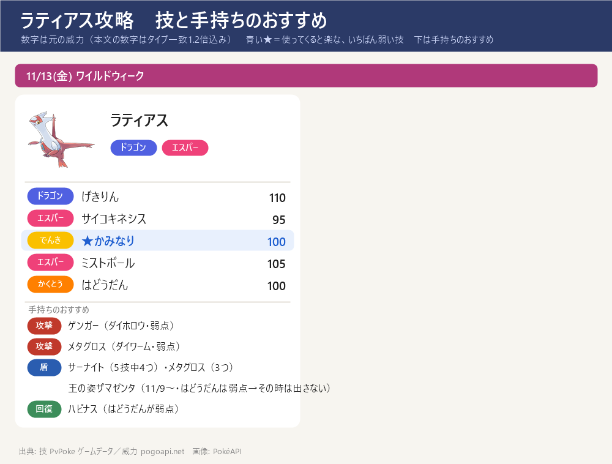
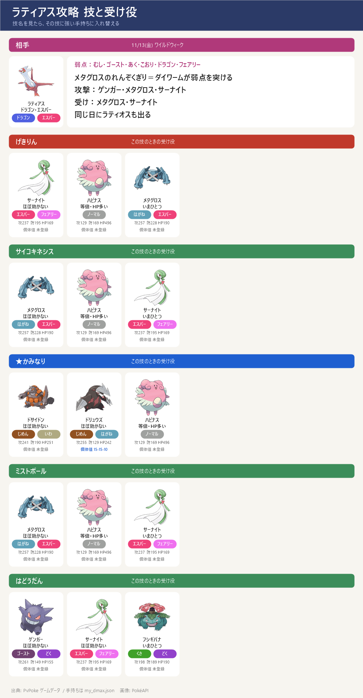

ダイマックス ラティアス 攻略（11/13 金）
ダイマックス ラティアス 攻略（11/13 金）- ワイルドウィーク 11/13(金) の★5 マックスバトル。ダイマックス ラティアス（ドラゴン・エスパー）。同じ日にラティオスも出る。18:00～19:00 はパワースポットにも出る
- 弱点：むし・ゴースト・あく・こおり・ドラゴン・フェアリー（2倍）。手持ちではゲンガー・メタグロス（れんぞくぎり→ダイワーム）・サーナイト（あまえる）の3体が弱点を突ける
- 気をつける技：かみなり（ハピナス・メタグロス・サーナイトは等倍、シャワーズ・インテレオンは弱点）、はどうだん（ハピナスは弱点）
- この期間に捕まえると、スペシャルアタックミストボールを覚えている。色違いあり
技カード

スペシャルアタック候補とねらい目

- げきりん（ドラゴン）威力 132 ← いちばん危ない
- サイコキネシス（エスパー）威力 114
- ★ かみなり（でんき）威力 100 ← ねらい目（いちばん弱い）
- ミストボール（エスパー）威力 126
- はどうだん（かくとう）威力 100
- 技は選べない。最初の大技の名前を見て、受け役を合わせる
ボスの攻撃のルール
- 1回のバトルで使う技は2つだけ：このボスのゲージ技（げきりん・サイコキネシス・かみなり・ミストボール・はどうだん）から2つが抽選され、片方が『単体攻撃（スペシャル技）』・もう片方が『全体攻撃』に決まる。バトルの間はこの割り当てのまま変わらない
- 単体攻撃（スペシャル技）：ねらわれた1体の頭の上に3本線（黄色い光）が出て約1秒後に当たる。左右にスワイプで避けられる（ギリギリで避けるほど軽い：すぐ約5割減・点滅直前で約7割減）
- 全体攻撃：「○○の全体攻撃！」の予告の帯が出て場の全員に当たる。避けられない → ダイウォールを張るか、その技に強い受け役に交代する
- 見分け方：出た技が『頭上の3本線』なら単体、『○○の全体攻撃！』の帯なら全体。最初の1〜2回でどの技がどちらかが分かる。来た技名に合わせて受け役を置く → 下の『パターンの早見表』『パターン別の作戦』を見る
- 負けてもマックス粒子（MP）は減らない → 組み合わせが悪ければ気にせず入り直してよい（入り直すと組み合わせは変わることがある）
- ルールの出典：ポケモンWiki「マックスバトル」＋みんポケ「回避のしかた」で一致（実際に戦った感覚とも一致）
パターンの早見表
どのパターンでも、まず弱点のない受け役で受けて技を確認 → 下のとおり入れ替える。評価は避けられない『全体攻撃』で決める：技の威力そのものが高い（150以上）か、相性の良い受け役でも大きく削られる（目安70以上）と『はずれ』、威力が低め（100以下）で相性の良い受け役なら軽い（目安50以下）と『当たり』、その間が『ふつう』。全技が高威力のボスでは『当たり』は出ない（単体攻撃はスワイプで避けられるので評価に入れない）
| # | 単体 3本線・避ける | 全体 予告・避けられない | 全体の 威力 | 評価 | 全体の受け役 |
|---|---|---|---|---|---|
| 1 | かみなり | はどうだん | 100 | 当たり | ゲンガー |
| 2 | はどうだん | かみなり | 100 | 当たり | フシギバナ |
| 3 | サイコキネシス | かみなり | 100 | 当たり | ドサイドン |
| 4 | サイコキネシス | はどうだん | 100 | 当たり | サーナイト |
| 5 | ミストボール | かみなり | 100 | 当たり | ドサイドン |
| 6 | ミストボール | はどうだん | 100 | 当たり | サーナイト |
| 7 | げきりん | かみなり | 100 | 当たり | ドサイドン |
| 8 | げきりん | はどうだん | 100 | 当たり | ゲンガー |
| 9 | かみなり | サイコキネシス | 114 | ふつう | メタグロス |
| 10 | はどうだん | サイコキネシス | 114 | ふつう | メタグロス |
| 11 | ミストボール | サイコキネシス | 114 | ふつう | メタグロス |
| 12 | げきりん | サイコキネシス | 114 | ふつう | メタグロス |
| 13 | かみなり | ミストボール | 126 | ふつう | メタグロス |
| 14 | はどうだん | ミストボール | 126 | ふつう | メタグロス |
| 15 | サイコキネシス | ミストボール | 126 | ふつう | メタグロス |
| 16 | かみなり | げきりん | 132 | ふつう | サーナイト |
| 17 | はどうだん | げきりん | 132 | ふつう | サーナイト |
| 18 | げきりん | ミストボール | 126 | ふつう | メタグロス |
| 19 | サイコキネシス | げきりん | 132 | ふつう | サーナイト |
| 20 | ミストボール | げきりん | 132 | ふつう | サーナイト |
数字＝全体攻撃1発の目安（威力×相性・タイプ一致1.2倍込み）。『全体の威力』は技そのものの威力。評価＝威力150以上か目安70以上→はずれ／威力100以下かつ目安50以下→当たり／その間→ふつう。手持ち・個体値・技レベルは my_dmax.json より
パターン別の作戦
タップで開く（当たり→ふつう→はずれ の順）
パターン1 単体=かみなり／全体=はどうだん ［当たり］
評価：当たり — 避けられない全体攻撃が威力低めで、相性の良い受け役なら軽い組み合わせ。少人数ならこれになるまで入り直すのが定番
単体＝かみなり（頭上に3本線・スワイプで避けられる）
前に出す受け役：フシギバナ（いまひとつ 62）
全体＝はどうだん（「はどうだんの全体攻撃！」の予告・避けられない）
交代先：ゲンガー（ほぼ効かない 24）／サーナイト（ほぼ効かない 39）
この受け役はダイウォールを持たないので、盾を張るなら メタグロス（ダイウォール Lv2）・ハピナス（ダイウォール Lv1）
攻撃役：ゲンガー／サーナイト／メタグロス
見分け方：最初に頭上の3本線でかみなり、予告の帯ではどうだんが来たらこのパターン
パターン2 単体=はどうだん／全体=かみなり ［当たり］
評価：当たり — 避けられない全体攻撃が威力低めで、相性の良い受け役なら軽い組み合わせ。少人数ならこれになるまで入り直すのが定番
単体＝はどうだん（頭上に3本線・スワイプで避けられる）
前に出す受け役：ゲンガー（ほぼ効かない 24）／サーナイト（ほぼ効かない 39）
全体＝かみなり（「かみなりの全体攻撃！」の予告・避けられない）
交代先：フシギバナ（いまひとつ 62）
この受け役はダイウォールを持たないので、盾を張るなら メタグロス（ダイウォール Lv2）・ハピナス（ダイウォール Lv1）
攻撃役：ゲンガー／サーナイト／メタグロス
見分け方：最初に頭上の3本線ではどうだん、予告の帯でかみなりが来たらこのパターン
パターン3 単体=サイコキネシス／全体=かみなり ［当たり］
評価：当たり — 避けられない全体攻撃が威力低めで、相性の良い受け役なら軽い組み合わせ。少人数ならこれになるまで入り直すのが定番
単体＝サイコキネシス（頭上に3本線・スワイプで避けられる）
前に出す受け役：メタグロス（ほぼ効かない 45）／ドリュウズ（いまひとつ 71）
全体＝かみなり（「かみなりの全体攻撃！」の予告・避けられない）
交代先：ドサイドン（ほぼ効かない 39）／ドリュウズ（ほぼ効かない 39）
この受け役はダイウォールを持たないので、盾を張るなら メタグロス（ダイウォール Lv2）・ハピナス（ダイウォール Lv1）
攻撃役：ゲンガー（サイコキネシスが弱点→その技が来ているときは前に出さない）／サーナイト／メタグロス
見分け方：最初に頭上の3本線でサイコキネシス、予告の帯でかみなりが来たらこのパターン
パターン4 単体=サイコキネシス／全体=はどうだん ［当たり］
評価：当たり — 避けられない全体攻撃が威力低めで、相性の良い受け役なら軽い組み合わせ。少人数ならこれになるまで入り直すのが定番
単体＝サイコキネシス（頭上に3本線・スワイプで避けられる）
前に出す受け役：メタグロス（ほぼ効かない 45）／サーナイト（いまひとつ 71）
全体＝はどうだん（「はどうだんの全体攻撃！」の予告・避けられない）
交代先：サーナイト（ほぼ効かない 39）
この受け役はダイウォールを持たないので、盾を張るなら メタグロス（ダイウォール Lv2）・ハピナス（ダイウォール Lv1）
攻撃役：ゲンガー（サイコキネシスが弱点→その技が来ているときは前に出さない）／サーナイト／メタグロス
見分け方：最初に頭上の3本線でサイコキネシス、予告の帯ではどうだんが来たらこのパターン
パターン5 単体=ミストボール／全体=かみなり ［当たり］
評価：当たり — 避けられない全体攻撃が威力低めで、相性の良い受け役なら軽い組み合わせ。少人数ならこれになるまで入り直すのが定番
単体＝ミストボール（頭上に3本線・スワイプで避けられる）
前に出す受け役：メタグロス（ほぼ効かない 49）／ドリュウズ（いまひとつ 79）
全体＝かみなり（「かみなりの全体攻撃！」の予告・避けられない）
交代先：ドサイドン（ほぼ効かない 39）／ドリュウズ（ほぼ効かない 39）
この受け役はダイウォールを持たないので、盾を張るなら メタグロス（ダイウォール Lv2）・ハピナス（ダイウォール Lv1）
攻撃役：ゲンガー（ミストボールが弱点→その技が来ているときは前に出さない）／サーナイト／メタグロス
見分け方：最初に頭上の3本線でミストボール、予告の帯でかみなりが来たらこのパターン
パターン6 単体=ミストボール／全体=はどうだん ［当たり］
評価：当たり — 避けられない全体攻撃が威力低めで、相性の良い受け役なら軽い組み合わせ。少人数ならこれになるまで入り直すのが定番
単体＝ミストボール（頭上に3本線・スワイプで避けられる）
前に出す受け役：メタグロス（ほぼ効かない 49）／サーナイト（いまひとつ 79）
全体＝はどうだん（「はどうだんの全体攻撃！」の予告・避けられない）
交代先：サーナイト（ほぼ効かない 39）
この受け役はダイウォールを持たないので、盾を張るなら メタグロス（ダイウォール Lv2）・ハピナス（ダイウォール Lv1）
攻撃役：ゲンガー（ミストボールが弱点→その技が来ているときは前に出さない）／サーナイト／メタグロス
見分け方：最初に頭上の3本線でミストボール、予告の帯ではどうだんが来たらこのパターン
パターン7 単体=げきりん／全体=かみなり ［当たり］
評価：当たり — 避けられない全体攻撃が威力低めで、相性の良い受け役なら軽い組み合わせ。少人数ならこれになるまで入り直すのが定番
単体＝げきりん（頭上に3本線・スワイプで避けられる）
前に出す受け役：サーナイト（ほぼ効かない 52）／メタグロス（いまひとつ 82）
全体＝かみなり（「かみなりの全体攻撃！」の予告・避けられない）
交代先：ドサイドン（ほぼ効かない 39）／ドリュウズ（ほぼ効かない 39）
この受け役はダイウォールを持たないので、盾を張るなら メタグロス（ダイウォール Lv2）・ハピナス（ダイウォール Lv1）
攻撃役：ゲンガー／サーナイト／メタグロス
見分け方：最初に頭上の3本線でげきりん、予告の帯でかみなりが来たらこのパターン
パターン8 単体=げきりん／全体=はどうだん ［当たり］
評価：当たり — 避けられない全体攻撃が威力低めで、相性の良い受け役なら軽い組み合わせ。少人数ならこれになるまで入り直すのが定番
単体＝げきりん（頭上に3本線・スワイプで避けられる）
前に出す受け役：サーナイト（ほぼ効かない 52）／メタグロス（いまひとつ 82）
全体＝はどうだん（「はどうだんの全体攻撃！」の予告・避けられない）
交代先：ゲンガー（ほぼ効かない 24）／サーナイト（ほぼ効かない 39）
この受け役はダイウォールを持たないので、盾を張るなら メタグロス（ダイウォール Lv2）・ハピナス（ダイウォール Lv1）
攻撃役：ゲンガー／サーナイト／メタグロス
見分け方：最初に頭上の3本線でげきりん、予告の帯ではどうだんが来たらこのパターン
パターン9 単体=かみなり／全体=サイコキネシス ［ふつう］
評価：ふつう — 受け役を合わせれば対応できる組み合わせ。ただし全体攻撃はそれなりに重いので、盾・交代をサボらない
単体＝かみなり（頭上に3本線・スワイプで避けられる）
前に出す受け役：ドサイドン（ほぼ効かない 39）／ドリュウズ（ほぼ効かない 39）
全体＝サイコキネシス（「サイコキネシスの全体攻撃！」の予告・避けられない）
交代先：メタグロス（ほぼ効かない 45）／ドリュウズ（いまひとつ 71）
この受け役はダイウォールも張れる
攻撃役：ゲンガー（サイコキネシスが弱点→その技が来ているときは前に出さない）／サーナイト／メタグロス
見分け方：最初に頭上の3本線でかみなり、予告の帯でサイコキネシスが来たらこのパターン
パターン10 単体=はどうだん／全体=サイコキネシス ［ふつう］
評価：ふつう — 受け役を合わせれば対応できる組み合わせ。ただし全体攻撃はそれなりに重いので、盾・交代をサボらない
単体＝はどうだん（頭上に3本線・スワイプで避けられる）
前に出す受け役：サーナイト（ほぼ効かない 39）
全体＝サイコキネシス（「サイコキネシスの全体攻撃！」の予告・避けられない）
交代先：メタグロス（ほぼ効かない 45）／サーナイト（いまひとつ 71）
この受け役はダイウォールも張れる
攻撃役：ゲンガー（サイコキネシスが弱点→その技が来ているときは前に出さない）／サーナイト／メタグロス
見分け方：最初に頭上の3本線ではどうだん、予告の帯でサイコキネシスが来たらこのパターン
パターン11 単体=ミストボール／全体=サイコキネシス ［ふつう］
評価：ふつう — 受け役を合わせれば対応できる組み合わせ。ただし全体攻撃はそれなりに重いので、盾・交代をサボらない
単体＝ミストボール（頭上に3本線・スワイプで避けられる）
前に出す受け役：メタグロス（ほぼ効かない 49）／ドリュウズ（いまひとつ 79）
全体＝サイコキネシス（「サイコキネシスの全体攻撃！」の予告・避けられない）
交代先：メタグロス（ほぼ効かない 45）／ドリュウズ（いまひとつ 71）
この受け役はダイウォールも張れる
攻撃役：ゲンガー（ミストボール・サイコキネシスが弱点→その技が来ているときは前に出さない）／サーナイト／メタグロス
見分け方：最初に頭上の3本線でミストボール、予告の帯でサイコキネシスが来たらこのパターン
パターン12 単体=げきりん／全体=サイコキネシス ［ふつう］
評価：ふつう — 受け役を合わせれば対応できる組み合わせ。ただし全体攻撃はそれなりに重いので、盾・交代をサボらない
単体＝げきりん（頭上に3本線・スワイプで避けられる）
前に出す受け役：サーナイト（ほぼ効かない 52）／メタグロス（いまひとつ 82）
全体＝サイコキネシス（「サイコキネシスの全体攻撃！」の予告・避けられない）
交代先：メタグロス（ほぼ効かない 45）／ドリュウズ（いまひとつ 71）
この受け役はダイウォールも張れる
攻撃役：ゲンガー（サイコキネシスが弱点→その技が来ているときは前に出さない）／サーナイト／メタグロス
見分け方：最初に頭上の3本線でげきりん、予告の帯でサイコキネシスが来たらこのパターン
パターン13 単体=かみなり／全体=ミストボール ［ふつう］
評価：ふつう — 受け役を合わせれば対応できる組み合わせ。ただし全体攻撃はそれなりに重いので、盾・交代をサボらない
単体＝かみなり（頭上に3本線・スワイプで避けられる）
前に出す受け役：ドサイドン（ほぼ効かない 39）／ドリュウズ（ほぼ効かない 39）
全体＝ミストボール（「ミストボールの全体攻撃！」の予告・避けられない）
交代先：メタグロス（ほぼ効かない 49）／ドリュウズ（いまひとつ 79）
この受け役はダイウォールも張れる
攻撃役：ゲンガー（ミストボールが弱点→その技が来ているときは前に出さない）／サーナイト／メタグロス
見分け方：最初に頭上の3本線でかみなり、予告の帯でミストボールが来たらこのパターン
パターン14 単体=はどうだん／全体=ミストボール ［ふつう］
評価：ふつう — 受け役を合わせれば対応できる組み合わせ。ただし全体攻撃はそれなりに重いので、盾・交代をサボらない
単体＝はどうだん（頭上に3本線・スワイプで避けられる）
前に出す受け役：サーナイト（ほぼ効かない 39）
全体＝ミストボール（「ミストボールの全体攻撃！」の予告・避けられない）
交代先：メタグロス（ほぼ効かない 49）／サーナイト（いまひとつ 79）
この受け役はダイウォールも張れる
攻撃役：ゲンガー（ミストボールが弱点→その技が来ているときは前に出さない）／サーナイト／メタグロス
見分け方：最初に頭上の3本線ではどうだん、予告の帯でミストボールが来たらこのパターン
パターン15 単体=サイコキネシス／全体=ミストボール ［ふつう］
評価：ふつう — 受け役を合わせれば対応できる組み合わせ。ただし全体攻撃はそれなりに重いので、盾・交代をサボらない
単体＝サイコキネシス（頭上に3本線・スワイプで避けられる）
前に出す受け役：メタグロス（ほぼ効かない 45）／ドリュウズ（いまひとつ 71）
全体＝ミストボール（「ミストボールの全体攻撃！」の予告・避けられない）
交代先：メタグロス（ほぼ効かない 49）／ドリュウズ（いまひとつ 79）
この受け役はダイウォールも張れる
攻撃役：ゲンガー（サイコキネシス・ミストボールが弱点→その技が来ているときは前に出さない）／サーナイト／メタグロス
見分け方：最初に頭上の3本線でサイコキネシス、予告の帯でミストボールが来たらこのパターン
パターン16 単体=かみなり／全体=げきりん ［ふつう］
評価：ふつう — 受け役を合わせれば対応できる組み合わせ。ただし全体攻撃はそれなりに重いので、盾・交代をサボらない
単体＝かみなり（頭上に3本線・スワイプで避けられる）
前に出す受け役：ドサイドン（ほぼ効かない 39）／ドリュウズ（ほぼ効かない 39）
全体＝げきりん（「げきりんの全体攻撃！」の予告・避けられない）
交代先：サーナイト（ほぼ効かない 52）／メタグロス（いまひとつ 82）
この受け役はダイウォールを持たないので、盾を張るなら メタグロス（ダイウォール Lv2）・ハピナス（ダイウォール Lv1）
攻撃役：ゲンガー／サーナイト／メタグロス
見分け方：最初に頭上の3本線でかみなり、予告の帯でげきりんが来たらこのパターン
パターン17 単体=はどうだん／全体=げきりん ［ふつう］
評価：ふつう — 受け役を合わせれば対応できる組み合わせ。ただし全体攻撃はそれなりに重いので、盾・交代をサボらない
単体＝はどうだん（頭上に3本線・スワイプで避けられる）
前に出す受け役：ゲンガー（ほぼ効かない 24）／サーナイト（ほぼ効かない 39）
全体＝げきりん（「げきりんの全体攻撃！」の予告・避けられない）
交代先：サーナイト（ほぼ効かない 52）／メタグロス（いまひとつ 82）
この受け役はダイウォールを持たないので、盾を張るなら メタグロス（ダイウォール Lv2）・ハピナス（ダイウォール Lv1）
攻撃役：ゲンガー／サーナイト／メタグロス
見分け方：最初に頭上の3本線ではどうだん、予告の帯でげきりんが来たらこのパターン
パターン18 単体=げきりん／全体=ミストボール ［ふつう］
評価：ふつう — 受け役を合わせれば対応できる組み合わせ。ただし全体攻撃はそれなりに重いので、盾・交代をサボらない
単体＝げきりん（頭上に3本線・スワイプで避けられる）
前に出す受け役：サーナイト（ほぼ効かない 52）／メタグロス（いまひとつ 82）
全体＝ミストボール（「ミストボールの全体攻撃！」の予告・避けられない）
交代先：メタグロス（ほぼ効かない 49）／ドリュウズ（いまひとつ 79）
この受け役はダイウォールも張れる
攻撃役：ゲンガー（ミストボールが弱点→その技が来ているときは前に出さない）／サーナイト／メタグロス
見分け方：最初に頭上の3本線でげきりん、予告の帯でミストボールが来たらこのパターン
パターン19 単体=サイコキネシス／全体=げきりん ［ふつう］
評価：ふつう — 受け役を合わせれば対応できる組み合わせ。ただし全体攻撃はそれなりに重いので、盾・交代をサボらない
単体＝サイコキネシス（頭上に3本線・スワイプで避けられる）
前に出す受け役：メタグロス（ほぼ効かない 45）／ドリュウズ（いまひとつ 71）
全体＝げきりん（「げきりんの全体攻撃！」の予告・避けられない）
交代先：サーナイト（ほぼ効かない 52）／メタグロス（いまひとつ 82）
この受け役はダイウォールを持たないので、盾を張るなら メタグロス（ダイウォール Lv2）・ハピナス（ダイウォール Lv1）
攻撃役：ゲンガー（サイコキネシスが弱点→その技が来ているときは前に出さない）／サーナイト／メタグロス
見分け方：最初に頭上の3本線でサイコキネシス、予告の帯でげきりんが来たらこのパターン
パターン20 単体=ミストボール／全体=げきりん ［ふつう］
評価：ふつう — 受け役を合わせれば対応できる組み合わせ。ただし全体攻撃はそれなりに重いので、盾・交代をサボらない
単体＝ミストボール（頭上に3本線・スワイプで避けられる）
前に出す受け役：メタグロス（ほぼ効かない 49）／ドリュウズ（いまひとつ 79）
全体＝げきりん（「げきりんの全体攻撃！」の予告・避けられない）
交代先：サーナイト（ほぼ効かない 52）／メタグロス（いまひとつ 82）
この受け役はダイウォールを持たないので、盾を張るなら メタグロス（ダイウォール Lv2）・ハピナス（ダイウォール Lv1）
攻撃役：ゲンガー（ミストボールが弱点→その技が来ているときは前に出さない）／サーナイト／メタグロス
見分け方：最初に頭上の3本線でミストボール、予告の帯でげきりんが来たらこのパターン
手持ちが受けるダメージ
- ハピナス：げきりん 132 ／ サイコキネシス 114 ／ かみなり 100 ／ ミストボール 126 ／ はどうだん 160（弱点）
- メタグロス：げきりん 82（いまひとつ） ／ サイコキネシス 45（ほぼ効かない） ／ かみなり 100 ／ ミストボール 49（ほぼ効かない） ／ はどうだん 100
- サーナイト：げきりん 52（ほぼ効かない） ／ サイコキネシス 71（いまひとつ） ／ かみなり 100 ／ ミストボール 79（いまひとつ） ／ はどうだん 39（ほぼ効かない）
- ドサイドン：げきりん 132 ／ サイコキネシス 114 ／ かみなり 39（ほぼ効かない） ／ ミストボール 126 ／ はどうだん 160（弱点）
- ドリュウズ：げきりん 82（いまひとつ） ／ サイコキネシス 71（いまひとつ） ／ かみなり 39（ほぼ効かない） ／ ミストボール 79（いまひとつ） ／ はどうだん 160（弱点）
- シャワーズ（預け中・CP未確認）：げきりん 132 ／ サイコキネシス 114 ／ かみなり 160（弱点） ／ ミストボール 126 ／ はどうだん 100
- フシギバナ：げきりん 132 ／ サイコキネシス 182（弱点） ／ かみなり 62（いまひとつ） ／ ミストボール 202（弱点） ／ はどうだん 62（いまひとつ）
- エースバーン：げきりん 132 ／ サイコキネシス 114 ／ かみなり 100 ／ ミストボール 126 ／ はどうだん 100
- カイリキー：げきりん 132 ／ サイコキネシス 182（弱点） ／ かみなり 100 ／ ミストボール 202（弱点） ／ はどうだん 100
- インテレオン：げきりん 132 ／ サイコキネシス 114 ／ かみなり 160（弱点） ／ ミストボール 126 ／ はどうだん 100
- ゲンガー：げきりん 132 ／ サイコキネシス 182（弱点） ／ かみなり 100 ／ ミストボール 202（弱点） ／ はどうだん 24（ほぼ効かない）
- 数字＝技の威力 × 相性（ボスと同じタイプの技は1.2倍）。並びは受けやすい順（防御とHPも計算に入れた）
攻撃役の1発ダメージ
- 前提：相手の防御の補正 0.85（ディアルガ・パルキアのページと同じ）。個体値15/15/15として CP からレベルを逆算。ボスのHPはどのサイトにも未掲載なので、何回で倒せるかは出していない → 手持ち同士の比べ合い用
- 1発のダメージ（今の技レベル → Lv3 にしたとき）
- ● ゲンガー（ダイホロウ・弱点）：1発 308（Lv3 済み）
- ● サーナイト（ダイフェアリー・弱点）：1発 210 ／ Lv3：244
- ● メタグロス（ダイワーム・弱点）：1発 183 ／ Lv3：256
- ドサイドン（ダイアース・等倍）：1発 148 ／ Lv3：172
- ドリュウズ（ダイアース・等倍）：1発 109 ／ Lv3：152
- ハピナス（ダイアタック・等倍）：1発 76 ／ Lv3：107
並びと動き方
- メタグロス：エスパー技はほぼ効かない、ドラゴン技もいまひとつ。しかも攻撃は弱点を突ける → 最後まで残す軸
- サーナイト：ドラゴン技・はどうだんはほぼ効かない、エスパー技もいまひとつ → 受け役の2番手（あまえるなので攻撃も弱点）
- ゲンガー：攻撃は強いが、エスパー技が弱点 → 技名がサイコキネシス・ミストボールなら攻撃のときだけ出す
- ハピナス：はどうだんが弱点（160）。それ以外は等倍で HP が多いので回復役
- 出さない：フシギバナ（エスパー技が弱点）、エースバーン（攻撃がいまひとつ）
戦い方のコツ
- 出陣させる3体：メタグロス・ゲンガー・サーナイト（メタグロス＝最初の盾・攻撃／ゲンガー＝攻撃／サーナイト＝攻撃・ドラゴン技とはどうだんの盾）。マックスバトルに連れて行けるのは1人3体まで。下の入れ替えはこの3体の中で行う
- 最初の受け役はメタグロス：ボスの技（狙い撃ち・全体攻撃）は1回使われるまで分からない（ほかの人に当たっても技名は出る）→ 技名が分かるまではメタグロスで受ける（弱点の技がない。ハピナスは はどうだんが弱点）。分かったら下のとおり入れ替える
- げきりんなら → 盾をサーナイトに替える（ほぼ効かない）。攻撃はゲンガー・サーナイトでいく
- サイコキネシスなら → 盾はそのままメタグロス（ほぼ効かない）。攻撃はサーナイト・メタグロスでいく（ゲンガーは「サイコキネシス」が弱点なので、ダイマックス以外は下げておく）
- かみなりなら → 盾はそのままメタグロス（等倍）。攻撃はゲンガー・サーナイトでいく
- ミストボールなら → 盾はそのままメタグロス（ほぼ効かない）。攻撃はサーナイト・メタグロスでいく（ゲンガーは「ミストボール」が弱点なので、ダイマックス以外は下げておく）
- はどうだんなら → 盾をゲンガーに替える（ほぼ効かない）。攻撃はゲンガー・サーナイトでいく
- 野良では抜けずに受け役を入れ替える：ボスの技（狙い撃ち1つ＋全体攻撃1つ）は挑戦ごとに抽選されるが、途中で抜けると残りの3人が不利になる → 技名を見て、その技に強い手持ちに替える。入り直し（MP は勝ったときだけ減る）は知り合いと組んで、全員で決めたときだけ
- タンクは通常技だけ連打：スペシャル技よりメーターが早くたまる。0.5秒の通常技（ハピナスのはたく・メタグロスのれんぞくぎり）が向く
- エネルギーはスワイプで取る（タップではない）。アイコン1個でメーター +10%
- ダイマックス中は「盾 → 回復 → 攻撃」の順で決める：まずダイウォール（3回まで重ねがけ）、HPが減っていればダイリカバリー、それ以外はダイ攻撃
- ダイリカバリーは同じ4人グループの「場に出ている」4体だけ回復。控えのポケモンは回復しない
- 回復量は使ったポケモンの最大HPが基準：Lv1 8%・Lv2 12%・Lv3 16% を4体に同じ量 → ハピナス（HP397）で Lv1 は 31、Lv2 は 47。Lv2 に上げるのが先
- 勝負は約5分：開始 約4分30秒で「暴走寸前」と出て、約5分～5分30秒で暴走する（伝説★5はボスの攻撃が約3倍、★3は約9倍）。暴走後はすぐ全滅しやすい → 「暴走寸前」が出たら盾・回復はやめてダイ攻撃だけ。ダイマックスは出し惜しみしない（9db・Bulbapedia。決まった時間切れは無く、英語の Bulbapedia だけ約8分で打ち切りと書く）
- 倒れても応援：応援1回で仲間のメーター +20%。速く押しすぎると数えられないので、少し間をあけて押す
- 一度に戦えるのは4人まで。★5 はひとりでは無理 → 18:00～19:00 のパワースポットやキャンプファイアで人を集める
MP（マックス粒子）とディアルガ戦との兼ね合い
- 1戦 800MP（負けたら減らない）。1日に集められるのはふだん800
- 注意：ディアルガ戦（11/14）の計画では、11/12・13 は MP を使わずにためて1,500にする日。ここで★5 と戦うと 11/14 に戦える数が1回減る（3戦 → 2戦）
- → どれか1体にしぼるなら、11/11(水) レジスチル（このあと2日でためなおせる）がいちばん影響が小さい
出典: イベント: ポケらく post164755・攻略大百科 archives/120451 ／ タイプ・技・威力: PvPoke ゲームデータ・PokéAPI(pogoapi) ／ 戦い方: ディアルガ攻略ページと同じ（ポケらく・ゲームウィズ・ドクターポケゴーゴー・公式ヘルプ）／ 手持ち: my_dmax.json ／ 全体: 「ワイルドウィーク2026」ページ
画像: PokéAPI ／ 更新 2026-10-24